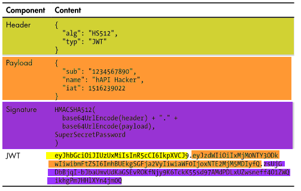
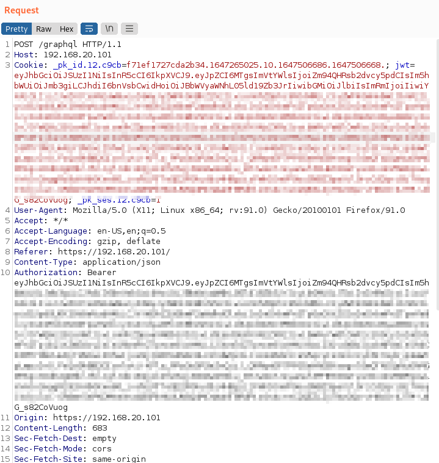

JWT (JSON Web Token)
A JSON Web Token (JWT) is a type of token commonly used in API token-based authentication. It’s used like this:
1. The API consumer authenticates to the API provider with a username and password.
2. The provider generates a JWT and sends it back to the consumer.
3. The consumer adds the provided JWT to the Authorization header in all API requests.
They’re one of the more prevalent API token types because they operate across a wide variety of programming languages, including:
◇ Python
◇ Java
◇ Node.js
◇ Ruby
◇ ...
The JWT format
A JSON Web Token consists of a header, payload, and signature in base64url encoding, separated by dots “.”, as follows:
HEADER.PAYLOAD.SIGNATURELet’s take apart the following real token:
Note that to craft the JWT we need first to base64url
HEADER + “.” + base64url
PAYLOAD + “.” base64url
SIGNATUREVulnerabilities
JWTs are generally secure but can be implemented in ways that will compromise that security.
API providers can implement JWTs that do not use encryption, which means you would be one base64 decode away from being able to see what is inside the token. An API hacker could decode such a token, tamper with the contents, and send it back to the provider to gain access
example: Base64URL encode and decode•
https://base64.guru/standards/base64url/encode•
https://base64.guru/standards/base64url/decode•
https://jwt.io/#debugger-ioLets see hos we cand decode the below JWT token, note how every string is separated by a dot
eyJhbGciOiJIUzI1NiIsInR5cCI6IkpXVCJ9.
eyJuYW1lIjoiSm9obiBEb2UiLCJ1c2VyX25hbWUiOiJqb2huLmRvZSIsImlzX2FkbWluIjpmYWxzZX0.
fSppjHFaqlNcpK1Q8VudRD84YIuhqFfA67XkLam0_aY
Bibliography:
https://www.invicti.com/blog/web-security/json-web-token-jwt-attacks-vulnerabilities/